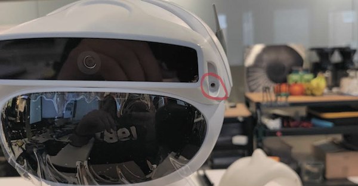
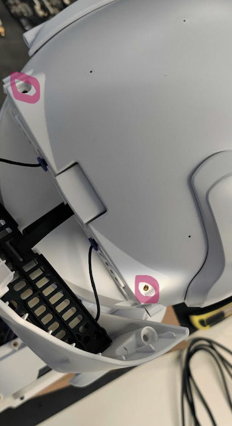
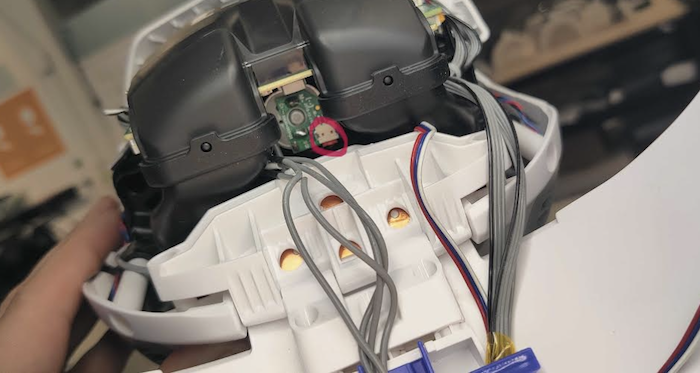
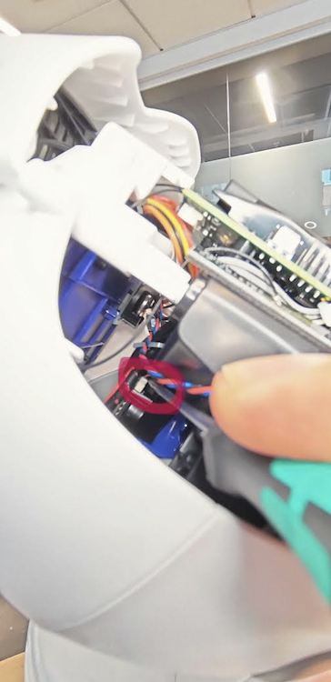
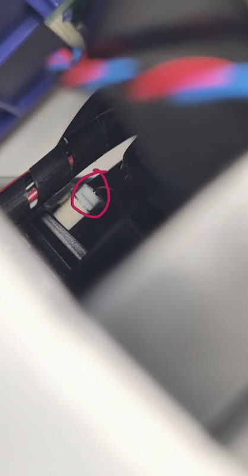
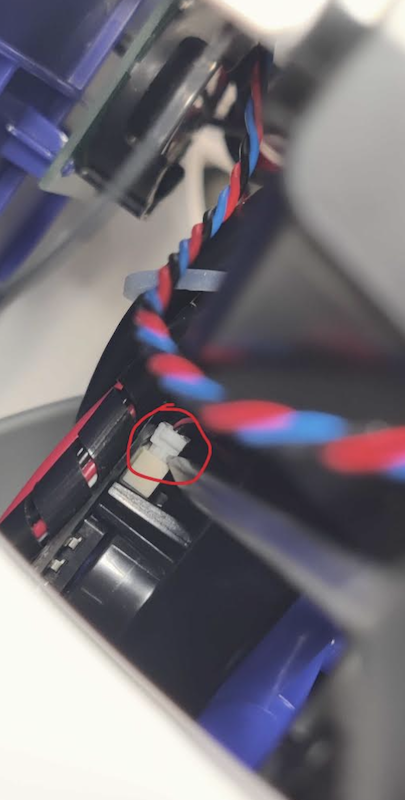
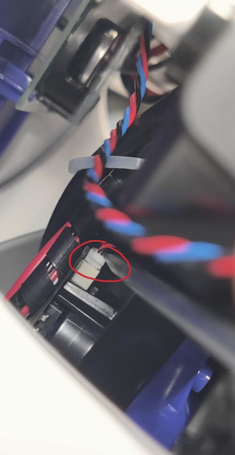

Overview
These instructions describe how to fix Misty II's head shake by reseating two internal connectors. The issue is typically caused by a loose motor/encoder connector on the backside of the head and/or a loose front connector hidden behind the pan mount holder. It may take a couple of tries to resolve.
Tools Required
- Phillips screwdriver
- Flat head screwdriver
Step-by-Step Instructions
Step 1: Remove the Camera Pan Mount Screws
Locate the two screws on each side of the camera pan mount, right above Misty's face. Remove both screws using the Phillips screwdriver.

Step 2: Remove the Top Head Screws
After removing the camera pan mount, you will be able to access two additional screws on top of Misty's head. Remove these two screws using the Phillips screwdriver.

Step 3: Open Up the Head
With all four screws removed, carefully open up the head of Misty to access the internal connectors.

Step 4: Reseat the Motor/Encoder Connector (Backside)
On the backside of the head, locate the motor/encoder connector (shown circled in red in the photo above). Unplug it and plug it back in firmly.
Step 5: Locate the Front Connector
The front connector is likely the one causing the head shake problem, but it is in a tricky spot. On the front side of Misty, behind the pan mount holder, you will find this connector hidden behind some cables.


Step 6: Partially Unplug the Front Connector
Using the flat head screwdriver, very slightly unplug the front connector — do not remove it completely, as it is difficult to get back in. Use the photo below as a reference for how much to loosen it.

Step 7: Press the Front Connector Back In
Press the connector back in firmly by applying downward force from above using the flat head screwdriver.

Step 8: Reassemble and Test
Replace the two top head screws and then reattach the camera pan mount and replace its two screws. Power on Misty and test whether the head shake issue is resolved. It may take a couple of tries of reseating the connectors before the problem is fully fixed.